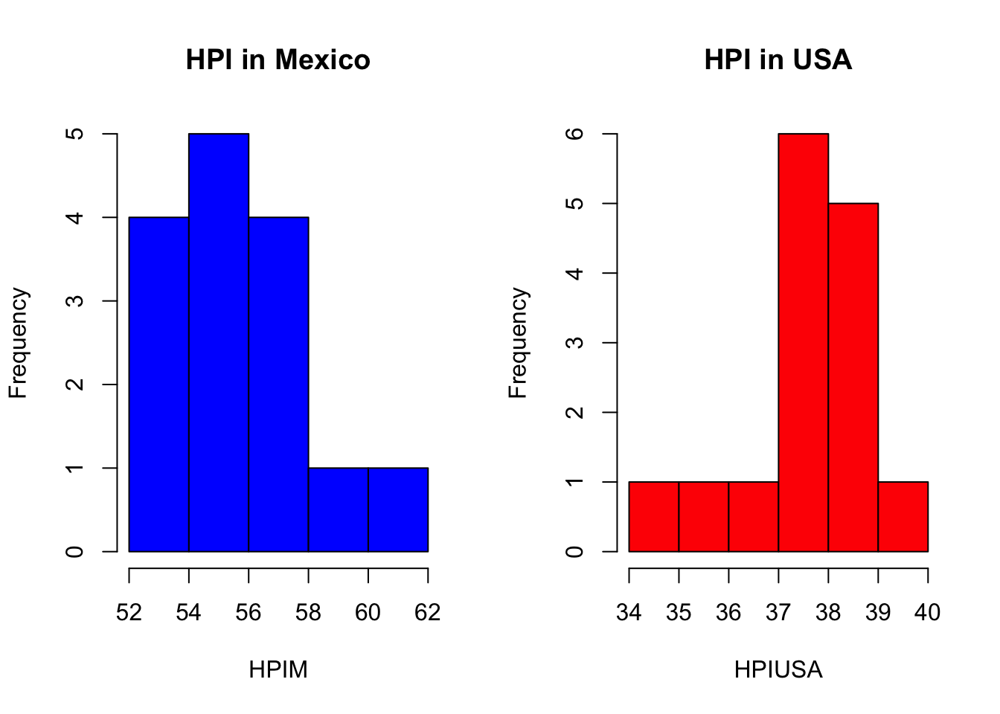
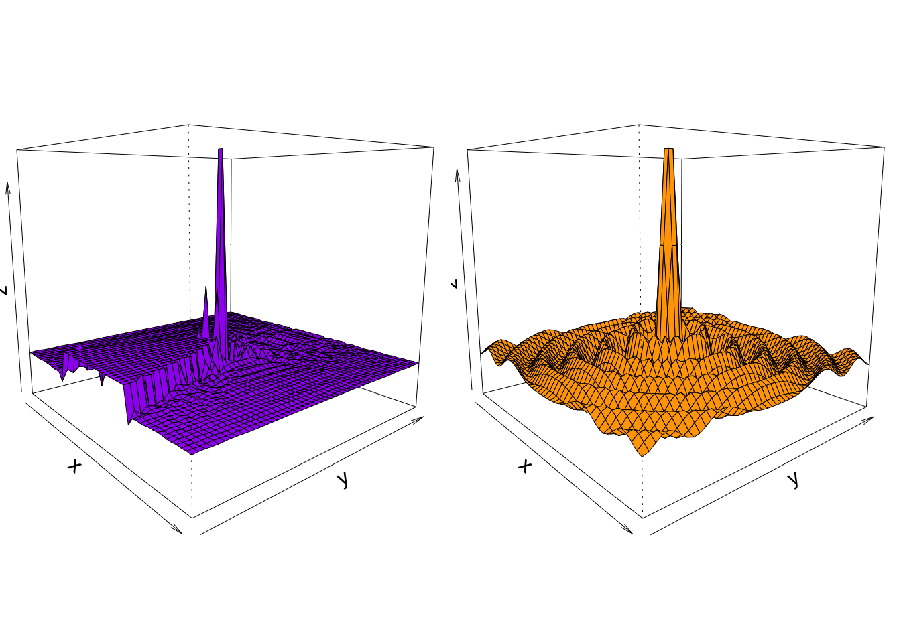

par(mfrow=c(1, 2))hist(HPIM, main="HPI in Mexico", col="blue")hist(HPIUSA, main="HPI in USA", col="red")

Code
#sequencepar(mfrow=c(1, 2))x <-seq(-30, 30, length=50)y <- xf <-function(x,y) { r <-sqrt(x^4+y^3); 10*sin(r)/r }z <-outer(x, y, f)
Warning in sqrt(x^4 + y^3): NaNs produced
Code
z[is.na(z)] <-1# 0.5 to include z axis labelpar(mar=c(0, .001, 0, 0), lwd=0.5)persp(x, y, z, theta =50, phi =10, expand = .9, col ="purple")f <-function(x,y) { r <-sqrt(x^2+y^2); 10*sin(r)/r }z <-outer(x, y, f)z[is.na(z)] <-1# 0.5 to include z axis labelpar(mar=c(0, .001, 0, 0), lwd=0.5)persp(x, y, z, theta =50, phi =10, expand = .9, col ="orange")

2. Thoughts on “The Future of Data Analysis” by Edward Tufte
I found the presentation informative and entertaining. In particular, I enjoyed the frequent references to Galileo. Edward described Galileo as one of the greatest thinking eyes with visual and quantitative mastery. He cites him as a personal inspiration. With his telescope, he had access to infinite big data. The image shown from the from the Galileo’s publication “The Starry Messenger,” is a wonderful example of data visualization. A constellation is shown, where those stars that are visible to the naked eye are represented with a dot inside, and the other stars that can only be seen with a telescope are filled in. In The “Starry Messenger” Galileo says that for centuries the way astronomy had been done was via arm chair speculation, but that they now had visible certainty to dispel instantly antiquated notions of astronomy. The brilliance of seeing so much data within an eye span.
-The measles cases graphic was amazing and informative. A lot of information conveyed in a single image.
-Edwards work focuses on evidence, inference, and conclusions. Visuals are supposed to assist reasoning about its content.
-As an econ major, I appreciated the mention of the Phillips curve, and how truly archaic and outdated that philosophy is. This was used to illustrate the bending of data and narratives to fit a certain agenda, as opposed to using the the data to tell the story. He talks about how we can have opinions, but they are not facts; the data themselves are facts. The misuse of data to fit agendas is NO BUENO. let the data do the story telling.
-His closing advice: numbers on the screen are representations of the real world, so look at the real world and not just it representations; walk around what you want to see. Always ask: How do I know that? How do we know that? How do they know that?
Source Code
---title: "Assignment 2 and prepare for class 4"author: "Leonard Ayala"date: "2022-09-17"categories: [Code, R, Art]image: "image.jpg"format: html: code-fold: true code-tools: true---## 1. Cool chartsThe line charts and histograms represent the Happiness Index Scores for Mexico and the United States from 2006-2020.The perspective charts just look cool.```{r}MexicoLE <-c(75.3, 75.3, 75.2, 75.1, 75.1, 75, 75, 74.9, 74.9, 74.9, 74.9, 74.9, 75, 75, 72.6)USALE <-c(77.9, 78.1, 78.3, 78.5, 78.7, 78.8, 78.9, 78.9, 78.9, 78.9, 78.9, 78.9, 78.9, 78.9, 77.4)HPIM <-c(53.7, 53.7, 55.2, 57.3, 54.3, 57.6, 58.7, 61.2, 56.7, 53.6, 57.2, 54.1, 55, 54.3, 52.1)HPIUSA <-c(34.3, 35.9, 36.4, 37.9, 37.2, 38.1, 38.6, 39, 38.6, 37.7, 37.2, 38.3, 37.4, 37.4, 39.7)year <-c(2006,2007,2008, 2009, 2010, 2011, 2012, 2013, 2014, 2015, 2016, 2017, 2018, 2019, 2020)plot(year, HPIM, main="Happiness Index", type="o", col="blue", pch="o", lty=1, xlab="Year", ylab="Happiness", ylim=c(0,70))points(year, HPIUSA, col="red", pch="o")lines(year, HPIUSA, col="red", lty=1)legend(2016,30, legend=c("Mexico","USA"), col=c("blue","red"),pch=c("o","o"))par(mfrow=c(1, 2))hist(HPIM, main="HPI in Mexico", col="blue")hist(HPIUSA, main="HPI in USA", col="red")#sequencepar(mfrow=c(1, 2))x <-seq(-30, 30, length=50)y <- xf <-function(x,y) { r <-sqrt(x^4+y^3); 10*sin(r)/r }z <-outer(x, y, f)z[is.na(z)] <-1# 0.5 to include z axis labelpar(mar=c(0, .001, 0, 0), lwd=0.5)persp(x, y, z, theta =50, phi =10, expand = .9, col ="purple")f <-function(x,y) { r <-sqrt(x^2+y^2); 10*sin(r)/r }z <-outer(x, y, f)z[is.na(z)] <-1# 0.5 to include z axis labelpar(mar=c(0, .001, 0, 0), lwd=0.5)persp(x, y, z, theta =50, phi =10, expand = .9, col ="orange")```## 2. Thoughts on "The Future of Data Analysis" by Edward TufteI found the presentation informative and entertaining. In particular, I enjoyed the frequent references to Galileo. Edward described Galileo as one of the greatest thinking eyes with visual and quantitative mastery. He cites him as a personal inspiration. With his telescope, he had access to infinite big data. The image shown from the from the Galileo's publication "The Starry Messenger," is a wonderful example of data visualization. A constellation is shown, where those stars that are visible to the naked eye are represented with a dot inside, and the other stars that can only be seen with a telescope are filled in. In The "Starry Messenger" Galileo says that for centuries the way astronomy had been done was via arm chair speculation, but that they now had visible certainty to dispel instantly antiquated notions of astronomy. The brilliance of seeing so much data within an eye span.-The measles cases graphic was amazing and informative. A lot of information conveyed in a single image.-Edwards work focuses on evidence, inference, and conclusions. Visuals are supposed to assist reasoning about its content.-As an econ major, I appreciated the mention of the Phillips curve, and how truly archaic and outdated that philosophy is. This was used to illustrate the bending of data and narratives to fit a certain agenda, as opposed to using the the data to tell the story. He talks about how we can have opinions, but they are not facts; the data themselves are facts. The misuse of data to fit agendas is NO BUENO. let the data do the story telling.-His closing advice: numbers on the screen are representations of the real world, so look at the real world and not just it representations; walk around what you want to see. Always ask: How do I know that? How do we know that? How do they know that?